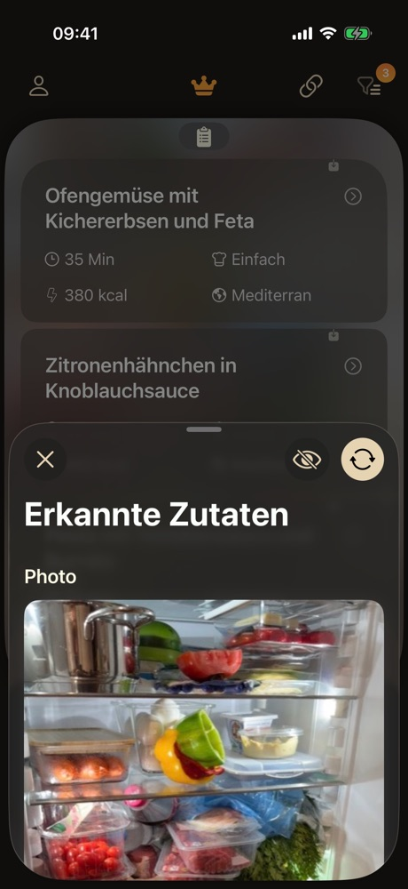
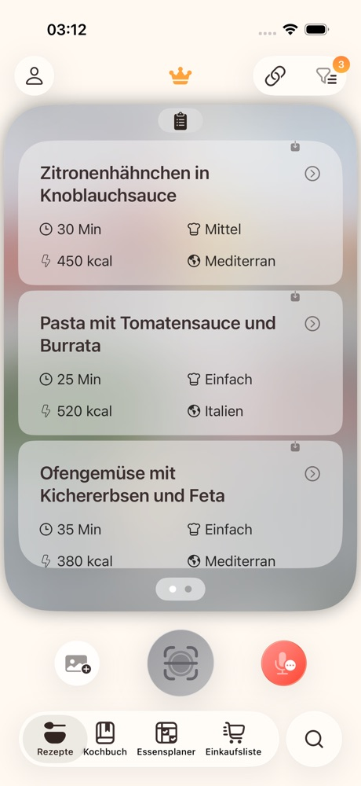
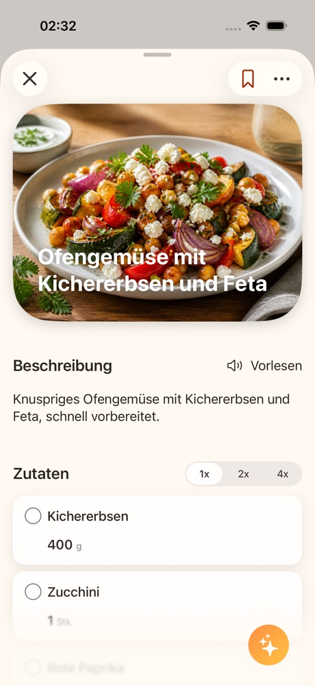

ReciPics
ReciPics
Der Kühlschrank ist voll, aber eine Idee fürs Abendessen fehlt. Fotografier mit ReciPics die Zutaten, die du da hast, und du bekommst Rezeptvorschläge, in denen mehrere davon vorkommen. Kein Foto zur Hand? Dann sag einfach, was da ist.
Im App Store ansehen


Screens aus der deutschen App mit Beispielinhalten (Testversion). Kühlschrankfoto und Rezeptfotos sind KI-generierte Beispiele; in der App entstehen die Vorschläge aus deinem eigenen Foto und können abweichen. Kalorien und Nährwerte sind Schätzungen.
Eine halbe Paprika, ein paar Eier, eine Tüte Spinat, Reis von gestern. Für jede Zutat einzeln ein Rezept zu suchen, dauert länger als das Kochen selbst. ReciPics fängt bei dem an, was schon vor dir liegt, und schlägt vor, was du daraus machen kannst.
Wähl vor dem Foto eine Mahlzeitenart (Frühstück, Brunch, Mittagessen, Abendessen, Dessert, Snack oder Getränke) und eine Ernährungspräferenz, zum Beispiel vegetarisch, vegan, glutenfrei, laktosefrei oder Keto. Die Vorschläge richten sich danach. Ernährungsfilter sind eine Orientierung, keine Garantie bei Allergien oder medizinischen Diäten.
In deinem Profil kannst du außerdem Allergien und Ernährungseinschränkungen hinterlegen (gesundheitsbezogene Angaben, nur mit deiner Zustimmung geteilt). Wenn du zustimmst, sie zu teilen, berücksichtigt ReciPics sie bei den Vorschlägen. KI kann Fehler machen: Prüfe Zutaten bei Allergien oder Unverträglichkeiten immer selbst.
Nein. ReciPics muss nur wissen, welche Zutaten du hast, nicht wie viel davon. Das fertige Rezept nennt dann Mengen. Schau vor dem Kochen nach, ob deine Vorräte reichen.
Ja. Lösch Zutaten, die du nicht verwenden willst, aus der Liste der erkannten Zutaten, bevor du neue Vorschläge holst, und wähl eine Ernährungspräferenz wie vegetarisch, vegan oder glutenfrei. Allergien und Ernährungseinschränkungen kannst du in deinem Profil hinterlegen. Prüfe Zutaten bei Allergien oder Unverträglichkeiten immer selbst.
ReciPics versucht, nur aufzulisten, was es deutlich erkennen kann. Ein scharfes Foto bei gutem Licht klappt am besten; ein unscharfes oder dunkles Foto wird unter Umständen nicht erkannt. KI kann sich irren: Schau dir die Liste an und ergänze, was fehlt.
Nein. Für das Erkennen der Zutaten und die Rezeptvorschläge brauchst du eine Internetverbindung. Gespeicherte Rezepte liegen auf deinem iPhone.
Ja. ReciPics ist eine iPhone-App ab iOS 26. Eine Android- oder Web-Version gibt es nicht.
Rezept schon online gefunden? Rezept aus Link zeigt dir im Browser nur das Rezept · Rezepte von Websites speichern
Fehlt dir für ein Rezept eine Zutat? Zutaten im Rezept ersetzen
Vorschläge aus Fotos, Sprache und Text zählen zum KI-Kontingent der App, das ohne Premium begrenzt ist.
Für die Vorschläge werden dein Foto, deine Sprachaufnahme oder dein Text an unsere Server und Dienstleister gesendet, darunter unser KI-Anbieter OpenAI (USA); siehe Datenschutz.
ReciPics im App Store ladenFür iPhone mit iOS 26 oder neuer.